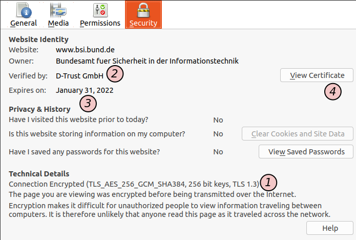
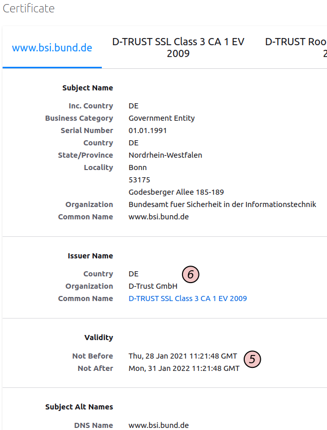
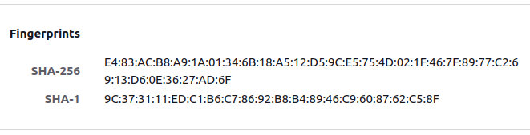
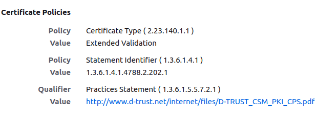
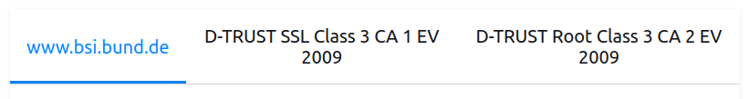

Was bedeutet das Vorhängeschloss im Browser?

Ich habe immer wieder Anlauf genommen, mir das Folgende mal von der Seele zu schreiben und es immer wieder aufgeschoben - jetzt ist es aber soweit!
Eigentlich ist die Überschrift schon mal falsch - das Vorhängeschloss selbst bedeutet schon mal gar nichts - es kommt darauf an, was der Browser auf Nachfrage für weitere Informationen preisgibt - erst wenn ich dei einsehe, kann ich mir eine informierte Meinung dazu bilden, was die Anzeige des kleinen Icons im Einzelnen bedeuten könnte.
Ich habe hier hin und wieder Artikel rund um das Thema -link rfc3161clientgithub.txt=Zertifikate und deren Anwendung veröffentlicht - aber ich stelle immer wieder fest, dass der normale Anwender entweder nicht darauf achtet oder manchmal sogar gar nicht wahrnimmt, dass ihm der Browser neben der Adresszeile mit einem kleinen Symbol etwas zuraunen möchte.
Ich möchte hier den Herstellern der Browser (ich spreche über Mozilla Firefox und Google Chrome in seinen diversen Ausprägungen und nehme an, dass andere wie Safari und Edge das genauso handhaben) zunächst was das angeht ein Lob aussprechen: früher war das kleine Icon noch eingefärbt - es gab grüne, gelbe und rote Varianten. Alle außer der grünen Variante deuteten darauf hin, dass die Verbindung "nicht sicher" war - was das im Detail bedeutete, musste der User schon selbst herausfinden - und in den guten alten Zeiten musste er dazu selbst aktiv werden: Die Seite wurde trotzdem geladen und wenn der User überhaupt bemerkte, dass etwas an der Adresszeile anders aussah, als gewohnt musste er das kleine Symbol anklicken und sich dann mit TechSprech auseinandersetzen - etwas, das nur höchst selten geschah - schließlich war die Seite geladen und konnte betrachtet werden... Das ist glücklicherweise seit geraumer Zeit anders - wenn jetzt das auftritt, was früher für eine andere Farbe des Vorhängeschlosses sorgte, dann wird die Seite nicht geladen und der Nutzer ist gezwungen, sich aktiv mit den zugrundeliegenden Ursachen auseinanderzusetzen.
Das ist besonders deshalb gut, weil manche Browser (das war zum Beispiel in Firefox eine Zeit lang möglich) gestatten, die GUI komplett mittels Plugins oder auch Javascript zu ändern - das bedeutet, dass bösartige Seiten einfach das - beispielsweise rote - Icon in der Adresszeile durch ein grünes "übermalen" konnten. Als Fußnote möchte ich anmerken, dass ich dem ganzen Skinning-Fieber - egal ob in Browsern oder sonstwo - extrem ablehnend gegenüber stehe...
Was - aus heutiger Sicht - bedeutet es aber nun, wenn eine Seite ohne Murren geladen wird und das kleine Vorhängeschloss neben der Adresszeile auftaucht? Ich habe die weiteren Ausführungen mit der Seite des BSI illustriert, das zum Erscheinungspunkt dankenswerterweise auf der Startseite eine hilfreiche Illustration darbot:
Illustration von der HomePage das BSI am 22.9.2021
Sehen wir uns zunächst an, was angezeigt wird, wenn wir uns die Detailinformationen dazu wünschen - in Firefox 92.0 muss man dazu auf das Symbol klicken und danach noch zweimal weitergehende Informationen anklicken, bis dann schließlich dieses Fenster erscheint:

Illustration von der HomePage das BSI am 22.9.2021Hier ist zunächst einmal das unmittelbar wichtigste ganz unten (1) zu finden: die Information darüber, dass die ausgetauschten Daten unterwegs verschlüsselt wurden. Und hier fängt es schon an, interessant zu werden: Die Daten sind für den Abschnitt des Übertragungsweges, der vom Absender als öffentlich begriffen wurde verschlüsselt! Im Netzwerk des Absenders können die Daten durchaus noch eine gewisse Strecke unverschlüsselt übertragen worden sein und könnten daher von potentiellen Angreifern, die in das Netz des Absenders eingedrungen sind, problemlos im Klartext mitgelesen werden! Etwas technischer ausgedrückt: Der Rechner, der die TLS-Verbindung terminiert und der Rechner, der mein eigentlicher Kommunikationspartner ist, müssen nicht identisch sein - zwischen beiden findet die Datenübertragung unverschlüsselt statt! Exkurs: Das ist zum Beispiel der Fall, wenn Dienste als Docker-Container realisiert werden und ein reverse Proxy wie nginx oder Traefik diese Rolle übernimmt.
Was wir im Beispiel sehen ist aber, dass die Verschlüsselung, die benutzt wird auf dem Stand der Technik ist - dem Laien mag vieles von dem, was unter (1) steht nichts sagen - die Versionsnummer am Ende ist aber wichtig - und da ist es so, dass 1.3 den aktuellen Stand der Technik darstellt - allem andere sollte man kritisch gegenüberstehen.
Interessant ist, dass es hier nicht mehr nur um Verschlüsselung geht - hier taucht plötzlich die Formulierung "Website Identity" auf - was bedeutet das nun? Die Identität der Webseite, bzw. deren Betreiber wird über ein elektronisches Zertifikat abgebildet, das man mit dem Knopf 4 einsehen kann.
Die Informationen unter (2) und (3) sagen dem übergroßen Bevölkerungsanteil erst einmal gar nichts - um hier zu verstehen, was das bedeutet, müssen wir nochmal tiefer graben und drücken dafür auf den Knopf (4). Zunächst sei aber noch auf etwas hingewiesen, womit ich in der Browser-UI ein Problem habe: Es wird hier zwar ein Ablaufdatum (3) angegeben - aber wo ist die Information, wann die Gültigkeit begonnen hat? Drücken wir also auf den Knopf (4) und sehen uns das Resultat an:

Illustration von der HomePage das BSI am 22.9.2021Hier fallen die Datumsangaben unter 5 ins Auge: diese sagen zunächst nur, wie lange das Zertifikat planmäßig gültig ist. Warum ist die Identität wichtig: Wir haben oben schon erklärt, dass das Vorhängeschloss bedeutet, dass die Kommunikation verschlüsselt stattfindet. Das Zertifikat verknüpft den Eigentümer des Schlüssels, der dafür benutzt wird mit einer konkreten Person (meistens eine juristische, manchmal auch eine natürliche Person). Dazu muss diese Person bei eine Institution (einer Certificate Authority) mit eben diesem Schlüssel vorstellig werden und diese Institution beglaubigt, dass die Institution diesen Schlüssel im Besitz hat.
Aber die Person wird nicht von der CA überwacht: nachdem das Zertifikat ausgestellt ist, gehen beide wieder getrennte Wege. Die CA weiß nicht, wie sorgfältig die Person mit dem Schlüssel umgeht und legt deswegen ein Ablaufdatum fest: Sie sagt also mit der Ausstellung dses Zertifikats, dass sie zu dem Zeitpunkt des Beginns der Gültigkeit gesehen hat, dass die Person im Besitz des Schlüssels war und davon ausgeht, dass die Person bis zum Ende der geplanten Gültigkeit in dessen Besitz sein wird. Es wird nicht ausgesagt, dass die Person alleiniger Besitzer des Schlüssels ist - Das kann die CA gar nicht prüfen!
Wichtig ist noch, dass das Vorhandensein eines Zertifikats noch nicht sicherstellt, dass man wirklich mit der darin angegebenen Person kommuniziert. Das kann man erst dadurch sicherstellen, dass man über einen weiteren sicheren Kanal den Fingerabdruck des Schlüssels mit der Person abgleicht. Dieser Abgleich muss über einen unabhängigen sicheren Kanal erfolgen. Es ist nämlich sehr einfach, ein Zertifikat für eine beliebige Person zu erzeugen - dieses Zertifikat beglaubigt aber dann natürlich einen Schlüssel, der nicht im Besitz der echten Person ist, da der Angreifer oder Man-in-the-Middle ja nur vorgibt, identisch mit dieser Person zu sein.

Illustration von der HomePage das BSI am 22.9.2021Wie der Fakt "ist in Besitz von" geprüft wird, ist von Anwendungsfall zu Anwendungsfall und von CA zu CA verschieden - diese Informationen sind in den Certificate Practise Statements (CPS) zu finden:

Illustration von der HomePage das BSI am 22.9.2021Wenn man also die Identität des Schlüssels über einen unabhängigen, sicheren Kanal verifiziert hat und die Certificate Practice Statements geprüft und für ausreichend befunden hat und dadurch zu der Einsicht gekommen ist, dass der Kommunikationspartner vertrauenswürdig ist und derjenige ist, mit dem man beabsichtigte, zu komunizieren kommt noch ein weiterer Punkt hinzu: Die CA benutzt ja einen Schlüssel, um das Zertifikat zu erstellen - wie weiß man aber, ob die CA vertrauenswürdig ist? Nun - die CAs verfügen ebenfalls wieder über Zertifikate, die deren zur Erstellung der Zertifikate benutzen Schlüssel beglaubigen - man muss nun also alles, was man zur Prüfung des Zertifikates des Servers getan hat auch für die Prüfung dieser Zertifikate tun - und das rekursiv, weil CAs ihre Schlüssel mitunter von anderen CAs beglaubigen lassen, die dies wiederum von anderen CAs ... usw.

Illustration von der HomePage das BSI am 22.9.2021 


Vor 5 Jahren hier im Blog
-
I'm with her tour radio promo
02.12.2017
Und nochmal Bluegrass: Sara Watkins, Sarah Jarosz and Aiofe O'Donovan from BBC radio Scotland Januar 29th 2015
Weiterlesen...
Tags
Android Basteln C und C++ Chaos Datenbanken Docker dWb+ ESP Wifi Garten Geo Git(lab|hub) Go GUI Gui Hardware Java Jupyter Komponenten Komponenten Git(lab|hub) Links Linux Markdown Markup Music Numerik PKI-X.509-CA Python QBrowser Rants Raspi Revisited Security Software-Test sQLshell TeleGrafana Verschiedenes Video Virtualisierung Windows Upcoming...
Neueste Artikel
- Datentypen für Custom Extensions von X509-Zertifikaten
Ich habe in letzter Zeit über die Möglichkeiten der Ergänzung von Zertifikaten durch das Hinzufügen beliebiger Informationen nachgedacht und dazu diverse Tests mit OpenSSL vollzogen um genau herauszufinden, wie man die verschiedenen Datentypen über openssl.conf definieren und hinzufügen kann.
Weiterlesen... - Archunit - für alle, die es noch nicht kennen...
Ich trage mich schon seit einer Weile mit dem Gedanken, einer größeren Leserschaft ein Werkzeug nahezubringen über das ich in einem der Projekte in meinem $dayjob gestolpert bin. Dabei handelt es sich um ein Testframework namens ArchUnit. Dieses Framework erlaubt es, diverse Metriken einer Codebasis zu testen, die sich grob in die Bereiche Architektur, Coding Style oder Model Check einordnen lassen.
Weiterlesen... - Nerd-Dictation Tests
Ich habe vor einiger Zeit schon einmal mit Spracherkennung experimentiert und war damals enttäuscht - vielleicht aber auch deshalb, weil ich nur mäßig motiviert war und mich deshalb bereits früh abschrecken ließ, als nicht alles sofort so funktioniert hat wie ich es wollte. Nun habe ich das Thema nochmals aufgegriffen...
Weiterlesen...
Manche nennen es Blog, manche Web-Seite - ich schreibe hier hin und wieder über meine Erlebnisse, Rückschläge und Erleuchtungen bei meinen Hobbies.
Wer daran teilhaben und eventuell sogar davon profitieren möchte, muß damit leben, daß ich hin und wieder kleine Ausflüge in Bereiche mache, die nichts mit IT, Administration oder Softwareentwicklung zu tun haben.
Ich wünsche allen Lesern viel Spaß und hin und wieder einen kleinen AHA!-Effekt...
PS: Meine öffentlichen GitHub-Repositories findet man hier.